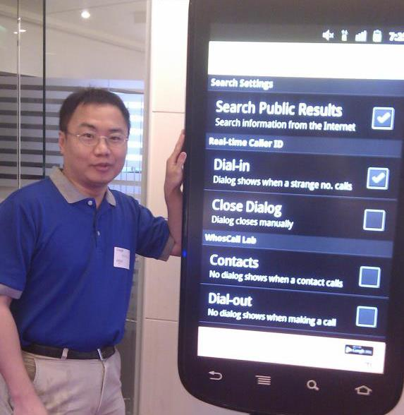

Associate Professor
林致宇 Chih-Yu Lin
博士 / 副教授
國立臺灣海洋大學 資訊工程學系 (NTOU CSE)
國立交通大學資訊工程博士。主要研究領域涵蓋車聯網與協同感知 (V2X)、分散式人工智慧與聯邦學習 (Federated Learning)、高精準網路流量分類、軟體定義網路 (SDN) 以及物聯網邊緣運算。主持智慧網路實驗室 (SNLab)。
註：本網頁內容由 AI 輔助彙整生成，雖已盡力校對核實，仍可能存在疏漏，敬請見諒。
15+
期刊論文 (SCI/EI)
30+
國際與國內研討會論文
SNLab
智慧網路實驗室主持人
學歷背景 (Education)
2003/09 ~ 2007/09
國立交通大學 資訊工程學系 博士 (Ph.D.)
National Chiao Tung University (Taiwan)
論文：Communication Protocols for Location
Management in Object Tracking Sensor Networks
指導教授：曾煜棋 教授 (Prof. Yu-Chee Tseng)、彭文志 教授 (Prof. Wen-Chih Peng)
指導教授：曾煜棋 教授 (Prof. Yu-Chee Tseng)、彭文志 教授 (Prof. Wen-Chih Peng)
2006/09 ~ 2006/12
美國俄亥俄州立大學 訪問學者 (Visiting Student)
Ohio State University (USA), Dept. of Computer Science and
Engineering
1998/09 ~ 2000/06
國立中央大學 資訊工程學系 碩士 (M.S.)
National Central University (Taiwan)
論文：A Multi-Channel MAC Protocol with
On-Demand Channel Assignment for Mobile Ad Hoc Networks
指導教授：許健平 教授 (Prof. Jang-Ping Sheu)、曾煜棋 教授 (Prof. Yu-Chee Tseng)
指導教授：許健平 教授 (Prof. Jang-Ping Sheu)、曾煜棋 教授 (Prof. Yu-Chee Tseng)
1993/09 ~ 1998/06
國立中央大學 資訊工程學系 學士 (B.S.)
National Central University (Taiwan)
專題：A Proxy Server for Wireless Networks
指導教授：許健平 教授、曾煜棋 教授
指導教授：許健平 教授、曾煜棋 教授
主要經歷 (Experiences)
Partial List
2026/02 ~ Present
國立臺灣海洋大學 資訊工程學系
副教授 (Associate Professor)
副教授 (Associate Professor)
2020/02 ~ 2026/01
國立臺灣海洋大學 資訊工程學系
助理教授 (Assistant Professor)
助理教授 (Assistant Professor)
2008/02 ~ 2011/07
亞洲大學 應用資訊與多媒體學系
助理教授 (Assistant Professor)
助理教授 (Assistant Professor)
2018 ~ 2019
國立交通大學 資訊工程學系
兼任授課師資（課程：Android 程式設計 - Kotlin）
兼任授課師資（課程：Android 程式設計 - Kotlin）
2017/02 ~ 2017/06
台北市立大學 資訊科學系
兼任助理教授（Swift 程式語言與 iOS 專案設計）
兼任助理教授（Swift 程式語言與 iOS 專案設計）
2016/05
交通大學電子系人才培訓中心 行動裝置應用開發講師
2015/03 ~ 2015/10
茂為歐買尬數位科技 技術顧問
2014/07 ~ 2015/02
有無科技 技術長 (CTO)
2013 ~ 2014
國立交通大學 資訊工程學系 兼任助理教授（雲端行動感測應用）
2009/07 ~ 2009/09
中央研究院 資訊科學研究所 訪問學者 (Visiting Scholar)
2007/09 ~ 2008/01
瑞昱半導體 - 交大聯合研發中心 兼任工程師
學術著作 (Publication List)
Journal Articles, Conference Papers, Books & Book Chapters期刊論文 (Journal Articles)
- Chih-Yu Lin, Chien-Cheng Wu, and Hong-Yi Huang, "A Traffic Classification-based Traffic Engineering Framework in Software-Defined Networking," International Journal of Communication Networks and Distributed Systems, vol. 32, no. 1, pp. 33–57, 2026. [Online]. Available: https://www.inderscienceonline.com/doi/abs/10.1504/IJCNDS.2026.150916 (ESCI, EI)
- B.-Y. Chan, C.-M. Chao, C.-Y. Lin, and C.-C. Yeh, "Cost-Efficient UAV Placement and Route Planning for RIS-Assisted Communication Networks," Computer Networks, vol. 279, 2026. DOI: 10.1016/j.comnet.2026.112139 (SCI)
- M.-R. Huang, C.-M. Chao, C.-Y. Lin, and C.-C. Yeh, "Enhancing Source Location Privacy in UWSN: A Multi-Channel Approach to Minimize Collisions, Retransmissions, and Power Consumption," Computer Networks, vol. 283, 2026. DOI: 10.1016/j.comnet.2026.112266 (SCI)
- Yao-Tsung Li, Chih-Min Chao, Chun-Chao Yeh, and Chih-Yu Lin, "A Distributed Beam Hopping Strategy with Load Balancing and Coordinated Interference Avoidance for Heterogeneous Satellite Systems," IEEE Transactions on Aerospace and Electronic Systems, vol. 62, pp. 1709-1720, 2026, doi: 10.1109/TAES.2025.3633205 (SCI)
- Ming-Hao Wei, Chih-Min Chao, Chih-Yu Lin, and Chun-Chao Yeh, "Fake Path Co-Construction Source Location Privacy Protection Scheme Design for UWSNs," IEEE Transactions on Information Forensics and Security, vol. 20, pp. 9139-9150, 2025. DOI: 10.1109/TIFS.2025.3597212 (SCI)
- Chih-Yu Lin, Chien-Ting Tseng, and Li-Yu An, "Employing Federated Semi-Supervised Learning for Network Traffic Classification," Journal of Network and Systems Management, vol. 33, no. 53, pp. 1-30, May 2025. (SCI)
- Y.-Heng Hsieh, C.-M. Chao, C.-C. Yeh, and C.-Y. Lin, "Anti-Jamming Low-Latency Channel Hopping Protocol for Cognitive Radio Networks," Electronics, 12(8):1811, 2023. DOI: 10.3390/electronics12081811 (SCI)
- Y. -J. Yang, C. -M. Chao, C. -C. Yeh and C. -Y. Lin, "WFID: Driver Identity Recognition Based on Wi-Fi Signals," IEEE Transactions on Vehicular Technology, vol. 72, no. 1, pp. 679-688, Jan. 2023. DOI: 10.1109/TVT.2022.3203725 (SCI)
- K.-W. Chen, C.-M. Chao, C.-Y. Lin, and C.-C. Yeh, "Anti-Jamming Channel Hopping Protocol Design Based on Channel Occupancy Probability for Cognitive Radio Networks," Computer Networks, vol. 214, Sep. 2022. (SCI)
- W.-C. Liang, C.-M. Chao, C.-Y. Lin, and C.-C. Yeh, "Transmission Range Determination and Antenna Deployment to Recognize Fitness Actions Using Wi-Fi Signals," International Journal of Ad Hoc and Ubiquitous Computing, vol. 41, no. 4, Oct. 2022. (SCI)
- C.-Y. Lin, C.-H. Wang, and Y.-C. Tseng, "A TDMA Protocol with Reinforcement Learning Slot Selection for MANETs," International Journal of Ad Hoc and Ubiquitous Computing, vol. 37, no. 1, pp. 16–25, 2021. [Website]
- C.-Y. Lin, Y.-C. Tseng, and Ten-Hwang Lai, "Exploiting Spatial Correlation at the Link Layer for Event-driven Sensor Networks," International Journal of Sensor Networks, vol. 12, no. 1, pp. 1–15, July 2012.
- W.-C. Shih, S.-S. Tseng, C.-C. Yang, C.-Y. Lin, and T. Liang, "A Folksonomy-based Guidance Mechanism for Context-aware Ubiquitous Learning: a Case Study of Chinese Scenic Poetry Appreciation Activities," Educational Technology & Society, vol. 15, no. 1, pp. 90–101, 2012. (SSCI)
- C.-Y. Lin, Y.-C. Tseng, and Yung-Chih Liu, "Imprecision-tolerant Location Management for Object-tracking Wireless Sensor Networks," The Computer Journal, vol. 53, no. 3, pp. 351–364, 2010. (SCIE, EI)
- C.-Y. Lin, Y.-C. Tseng, Ten-Hwang Lai, W.-C. Peng, and H.-W. Fang, "Message-efficient In-network Location Management in a Multi-sink Wireless Sensor Network," International Journal of Sensor Networks, vol. 3, no. 1, pp. 3–15, 2008.
- C.-Y. Lin, W.-C. Peng, and Y.-C. Tseng, "Efficient In-Network Moving Object Tracking in Wireless Sensor Networks," IEEE Transactions on Mobile Computing, vol. 5, no. 8, pp. 1044–1056, Aug. 2006. (SCI)
- S.-L. Wu, C.-Y. Lin, Y.-C. Tseng, and J.-P. Sheu, "A Novel MAC Protocol with On-Demand Channel Assignment for Multi-Hop Mobile Ad-Hoc Networks," International Journal of Electrical Engineering, vol. 11, no. 4, pp. 361–374, Nov. 2004. (EI)
- S.-L. Wu, Y.-C. Tseng, C.-Y. Lin, and J.-P. Sheu, "A Multi-Channel MAC Protocol with Power Control for Multi-Hop Mobile Ad Hoc Networks," The Computer Journal, vol. 45, no. 1, pp. 101–110, 2002. (SCIE, EI)
研討會論文 (Conference Papers)
- 王威翔、許為庭、林致宇, "應用於車輛訊息關聯之自動標記框架：以真實世界資料為驗證," 無線、隨意及感測網路研討會 (WASN 2026)，台灣，台中，2026年8月.
- Chih-Yu Lin, Ting-Wei Jiang, and Wan-Yun Wu, "A Pedestrian Location Estimation Method Based on Multi-Sensor Cooperation," in Proc. 2025 IEEE VTS Asia Pacific Wireless Communications Symposium (APWCS), Tokyo, Japan, 2025, pp. 1–5. DOI: 10.1109/APWCS67981.2025.11151960
- Liyakat Ali, and Chih-Yu Lin, "Implementing Federated Learning via IoTtalk: A Smart Home Case Study," in Proc. 2025 IEEE VTS Asia Pacific Wireless Communications Symposium (APWCS), Tokyo, Japan, 2025, pp. 1–5. DOI: 10.1109/APWCS67981.2025.11151953
- 蔡震霖、林致宇, "聯邦學習架構下聚合演算法於流量分類應用中的影響," 第二十九屆行動計算研討會 (MC 2025)，台灣，台北，2025年8月.
- 廖翊均、安立郁、林致宇, "樣本數及取樣方法的對於網路流量分類效能的影響," 第二十九屆行動計算研討會 (MC 2025)，台灣，台北，2025年8月.
- Wei-Rong Chen, Chih-Yu Lin, and Yu-Chee Tseng, "Label Expansion through Walking Trajectories for Wi-Fi CSI-Based Indoor Localization," in Proc. IEEE International Symposium on Personal, Indoor and Mobile Radio Communications (PIMRC), Valencia, Spain, Sep. 2024.
- 劉仲恒、林致宇, "FedMDFNN 模型之改進及效能分析," 無線、隨意及感測網路研討會 (WASN 2024)，台灣，台北，2024年8月.
- 安立郁、林致宇, "資料不平衡對網路流量分類的影響," 第二十八屆行動計算研討會 (MC 2024)，台灣，台北，2024年8月.
- Albert Budi Christian, Yi-Qi Zhong, Wan-Hsun Hu, Chia-Hsuan Yu, and Chih-Yu Lin, "A Simple Deep Q-Network based Feature Selection Method," in Proc. IEEE VTS Asia Pacific Wireless Communications Symposium (APWCS 2023), Tainan, Taiwan, Aug. 23-25, 2023, pp. 1–4. (presenter)
- 江庭葳、曾千庭、林致宇, "使用 Autoencoder 和聯邦式學習進行網路流量分類," 第二十七屆行動計算研討會 (MC 2023)，台灣，基隆，2023年8月.
- Guan-Sheng Wang, Chih-Yu Lin, Yu-Chee Tseng, and Lan-Da Van, "A Multilayer Perceptron Model for Station Grouping in IEEE 802.11ah Networks," in Proc. IEEE/IFIP Network Operations and Management Symposium (NOMS), Miami, USA, May 2023. (presenter)
- 曾千庭、林致宇、程匯芳、林暐傑, "使用聯邦式學習進行網路流量分類," 臺灣網際網路研討會 (TANET 2022)，台灣，桃園，2022年12月.
- 梁晉維、林致宇, "實現車輛周遭環境感知的自動標記法," 臺灣網際網路研討會 (TANET 2022)，台灣，桃園，2022年12月.
- Albert Budi Christian, Chih-Yu Lin, Yu-Chee Tseng, Lan-Da Van, Wan-Hsun Hu, and Chia-Hsuan Yu, "Accuracy-Time Efficient Hyperparameter Optimization Using Actor-Critic-based Reinforcement Learning and Early Stopping in OpenAI Gym Environment," in Proc. International Conference on Internet of Things and Intelligence System (IoTaIS), Bali, Indonesia, Nov. 2022.
- Albert Budi Christian, Yu-Hsuan Wu, Chih-Yu Lin, Lan-Da Van, and Yu-Chee Tseng, "Radar and Camera Fusion for Object Forecasting in Driving Scenarios," in Proc. International Symposium on Embedded Multicore/Many-core Systems-on-Chip (MCSoC), Malaysia, Dec. 2022.
- 林致宇、黃弘毅, "軟體定義網路下基於流量類別概念的流量分類與排程方法," 臺灣網際網路研討會 (TANET 2021)，台灣，台中，2021年12月.
- Albert Budi Christian, Chih-Yu Lin, Lan-Da Van, and Yu-Chee Tseng, "Data Fusion Driven Lane-level Precision Data Transmission for V2X Road Applications," in Proc. International Symposium on Embedded Multicore/Many-core Systems-on-Chip (MCSoC), Singapore, Dec. 2021.
- Albert Budi Christian, C.-Y. Lin, C.-W. Lee, L.-D. Van, and Y.-C. Tseng, "A Neural Network-based Multisensor Data Fusion Approach for Enabling Situational Awareness of Vehicles," in Proc. International Conference on Pervasive Artificial Intelligence (ICPAI), Taipei, Taiwan, Dec. 2020.
- 李佩俞、林獻庭、何鳳雯、林家弘、林逸豪、林致宇、陳志成, "使用長短期記憶神經網路演算法結合蜂巢式網路資訊的移動類型辨識器," 臺灣網際網路研討會 (TANET 2019)，台灣，高雄，2019年9月.
- 林獻庭、何鳳雯、林家弘、李佩俞、林逸豪、林致宇、陳志成, "SensingGO: 結合社交與獎勵活動之群眾量測平台," 第十五屆無線、隨意及感測網路研討會 (WASN 2019)，台灣，台南，2019年8月.
- T.-K. Lee, T.-W. Wang, W.-X. Wu, Y.-C. Kuo, S.-H. Huang, G.-S. Wang, C.-Y. Lin, J.-J. Chen, and Y.-C. Tseng, "Building a V2X Simulation Framework for Future Autonomous Driving," in Proc. The 20th Asia-Pacific Network Operations and Management Symposium (APNOMS), Matsue, Japan, Sep. 2019.
- Y.-H. Lin, J.-C. Chen, C.-Y. Lin, B.-Y. Su, and P.-Y. Lee, "Transportation Type Identification by using Machine Learning Algorithms with Cellular Information," in Proc. IEEE International Conference on Communications (ICC '19), Shanghai, China, May 2019.
- T.-K. Lee, Y.-C. Kuo, S.-H. Huang, G.-S. Wang, C.-Y. Lin, and Y.-C. Tseng, "Augmenting Car Surrounding Information by Inter-Vehicle Data Fusion," in Proc. IEEE Wireless Communications and Networking Conference (WCNC), Marrakech, Morocco, April 2019.
- Y.-H. Lin, J.-C. Chen, C.-Y. Lin, B.-Y. Su, and P.-Y. Lee, "Poster: SensingGO: toward mobile/cellular data measurement with social and rewarding activities," in Proc. ACM International Conference on Mobile Computing and Networking (MobiCom '18), New Delhi, India, pp. 765–767, Oct. 2018.
- 譚宇均、林元偉、林致宇、陳志成, "適地性社群媒體的設計與實作," 第二十一屆行動計算研討會 (MC 2016)，台灣，南投，2016年8月.
- C.-C. Wu, L.-P. Tung, C.-Y. Lin, B.-S. Lin, and Y.-C. Tseng, "On Local Cache Management Strategies for Mobile Augmented Reality," in Proc. IEEE International Symposium on a World of Wireless, Mobile and Multimedia Networks (WoWMoM), Sydney, Australia, June 2014.
- C.-Y. Lin, S.-H. Lu, and Y.-C. Tseng, "A Channel Management Protocol for Multi-Channel, Single-Radio 802.11-based Wireless Mesh Networks," in Proc. IEEE International Workshop on Computer Aided Modeling Analysis and Design of Communication Links and Networks (CAMAD), Kyoto, Japan, June 2011.
- 林致宇、時文中, "位置感知旅遊翻譯機之設計與實作," 第六屆台灣數位學習發展研討會 (TWELF 2010)，台灣，台中，2010年10月.
- C.-Y. Lin, "A Quadtree-based Location Management Scheme for Wireless Sensor Networks," in Proc. IEEE/IFIP Network Operations and Management Symposium (NOMS), Osaka, Japan, April 2010.
- C.-Y. Lin, Y.-C. Tseng, H.-W. Fang, Y.-F. Kao, Y.-F. Lee, and C.-C. Shen, "Vague Location Tracking in Wireless Sensor Networks," in Proc. Asia-Pacific Wireless Communications Symposium (APWCS), Sendai, Japan, Aug. 2008.
- C.-Y. Lin, Y.-C. Tseng, and T.-H. Lai, "Message-Efficient In-Network Location Management in a Multi-sink Wireless Sensor Network," in Proc. IEEE International Conference on Sensor Networks, Ubiquitous, and Trustworthy Computing (SUTC), Taichung, Taiwan, June 2006.
- C.-Y. Lin and Y.-C. Tseng, "Structures for In-Network Moving Object Tracking in Wireless Sensor Networks," in Proc. Broadband Wireless Networking Symposium (BroadNet), San Jose, California, USA, Oct. 2004.
- Y.-C. Tseng, S.-L. Wu, C.-Y. Lin, and J.-P. Sheu, "A Multi-Channel MAC Protocol with Power Control for Multi-Hop Mobile Ad Hoc Networks," in Proc. International Workshop on Wireless Networks and Mobile Computing (in conjunction with ICDCS 2001), Phoenix, Arizona, USA, April 2001, pp. 419–424.
- S.-L. Wu, C.-Y. Lin, Y.-C. Tseng, and J.-P. Sheu, "A New Multi-Channel MAC Protocol with On-Demand Channel Assignment for Mobile Ad Hoc Networks," in Proc. International Symposium on Parallel Architectures, Algorithms and Networks (I-SPAN), Dallas, Texas, USA, Dec. 2000, pp. 232–237.
- S.-L. Wu, C.-Y. Lin, C.-J. Huang, Y.-C. Tseng, and J.-P. Sheu, "W4: A WWW Proxy Server for Wireless Networks," in Proc. Cross-Straight Information Technology, Chung-Li, Taiwan, 1999.
專書與專書章節 (Books & Book Chapters)
- 林致宇, Android 程式設計入門與應用 (第二版), 全華出版, 2015. (ISBN: 978-957-21-9833-9)
- 林致宇, Android 程式設計入門與應用, 全華出版, 2014. (ISBN: 978-957-21-9412-6)
- 曾煜棋、林政寬、林致宇、潘孟鉉, 無線網路：通訊協定、感測網路、射頻技術與應用服務, 碁峰出版, 2011. (ISBN: 9789862763094)
- 曾煜棋、潘孟鉉、林致宇, 無線區域及個人網路-隨意及感測網路之技術與應用, 知城出版, 2007. (ISBN: 9868293316)
- W.-H. Tam, C.-Y. Lin, and Y.-C. Tseng, "Wireless Mesh Networks: Design Principles," in Wireless Ad Hoc Networking: Personal-Area, Local-Area, and Sensory-Area Networks, S.-L. Wu and Y.-C. Tseng, Eds., Auerbach Publications, 2007. (ISBN: 978-0849392542)
- C.-Y. Lin, W.-H. Tam, and Y.-C. Tseng, "Wireless Mesh Networks: Multi-Channel Protocols and Standard Activities," in Wireless Ad Hoc Networking: Personal-Area, Local-Area, and Sensory-Area Networks, S.-L. Wu and Y.-C. Tseng, Eds., Auerbach Publications, 2007. (ISBN: 978-0849392542)